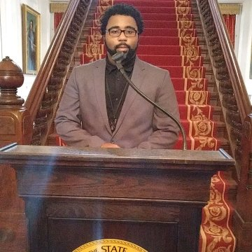

In 2013, I was awarded an IT internship at G4S Compliance and Investigations which evolved into a full-time position in 7 weeks’ time. There, I was part of a small team which was responsible for all IT and IT-adjacent issues for over 900 employees, most of whom were working remotely as private investigators. Because of this, we dealt with a wide variety of computing systems, operating systems, devices and network configurations. Assistance was handled in person, over the phone, via chat, email and remote control of devices. I worked both from home and onsite at the Raleigh HQ, often at odd hours as IT issues arose.
In 2014, I enrolled at Wake Technical Community College and subsequently graduated with an Associate in Science degree in 2016. After graduation, I transferred to North Carolina A&T State University where I am currently majoring in Computer Science, minoring in Applied Mathematics.
I am open to and excited about the opportunity to improve my IT and Software Development skills and to gain exposure to new technologies and industry methodologies.
Current and Demonstrable Development Experience: C++, Java including JavaFX, HTML, JavaScript including JQuery, Data Structures, GitHub Source Control, Advanced Topics in Mathematics
Email Us: Angelo Bradley
 My name is Teon Parker. I was born in Rocky Mount, North Carolina on September 24, 1996. I am a senior computer science student from Raleigh, North Carolina. I graduated from Wake Forest Heritage High School in 2014. I decided that I would major in computer science in my junior year of high school because it had always been my dream to be a scientist ever since I was in elementary school. I am, in a way, fulfilling this dream even though I was more interested in the natural sciences.
I like to think that I am a well-rounded individual. I have interests in many different things from various unrelated fields. My favorite sports are any combat sport which includes boxing, mixed martial arts, karate, judo, and wrestling(not WWE). I love philosophy, psychology, and genetics and evolution. I even used to be a car fanatic when I was younger.
Email Us: Teon Parker